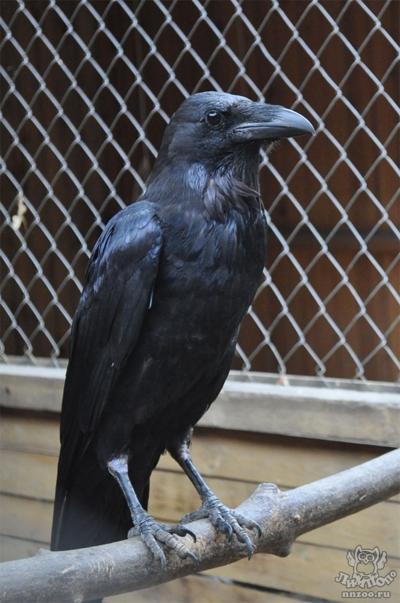
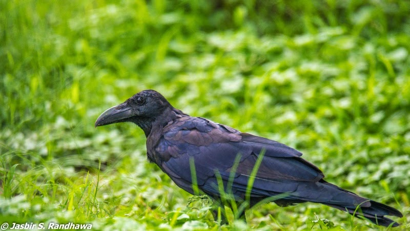
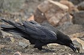
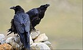
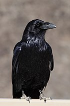

Здесь бы могла быть ваша реклама

По поводу рекламы внизу
Интерестные факты о воронах
Вороны перелетные птицы
Птица получила свое название благодаря цвету — «вороной» с древнеславянского означает «черный».
Вороны могут запоминать людей, которые пытались нанести им вред или напугали.
Ворон может выполнять фигуры высшего пилотажа — бочку и полубочку.
Вороны умеют пародировать другие звуки и запоминать слова.
| Подвид | Изображение | Распространение | Примечания |
| corax |  | Вся европейская часть ареала вида (без Испании и Португалии) на юг до Крыма, Кавказа, Копетдага, северного Ирана; Западная и Средняя Сибирь. | |
| subcorax |  | Греция, Центральная Азия, запад Китая, кроме Гималаев. | По внешнему виду крупнее, чем номинативный подвид, заострённые перья на горле сравнительно короткие. Оперение чёрное, на груди и шее перья имеют коричневатый оттенок, как и у пустынного ворона. Основание перьев на шее, как правило, белое. Иногда этому подвиду присваивают имя C. c. laurencei, основываясь на популяции, описанной в 1873 году Hume в Синде, что является предпочтительнее, потому что вид subcorax, обнаруженный и описанный Николаем Северцовым, относят к представителю пустынного ворона (Corvus ruficollis) |
tingitanus |
 | Северная Африка, на юг до Суса (южнее Атласа), на восток до Киренаики и Мерса-Матрух; Канарские острова. |
Первоначально имел название C. c. canariensis. Самый маленький по размеру из всех подвидов обыкновенного ворона. Перья на горле очень короткие, оперение имеет отличительный маслянистый блеск, клюв короткий, но крупный. Оперение имеет более коричневый оттенок в отличие от североафриканского воронов. |
tibetanus |
 | Вся горная Средняя Азия (кроме Туркменистана), Гималаи и Тибет. |
Крупнее и имеет более блестящее оперение по сравнению со всеми другими подвидами. Удлинённые перья на нижней части горла длиннее. Клюв массивный. Радужка глаза коричневая. |
sinuatus |
 | Запад США, на юге до севера Гондураса и Мексики и прилегающих островов. |
прилегающих островов. Меньше по размеру и с более узким и маленьким клювом по сравнению с С. с. principalis. Кроме основной популяции есть виды, обитающие дальше на юго-западе США и северо-западе Мексики (включая острова Ревилья-Хихедо). Эти виды иногда относят к С. С. sinuatus, но некоторые выделяют их в качестве отдельного подвида С. С. clarionensis. |

.png)
.png)
.png)